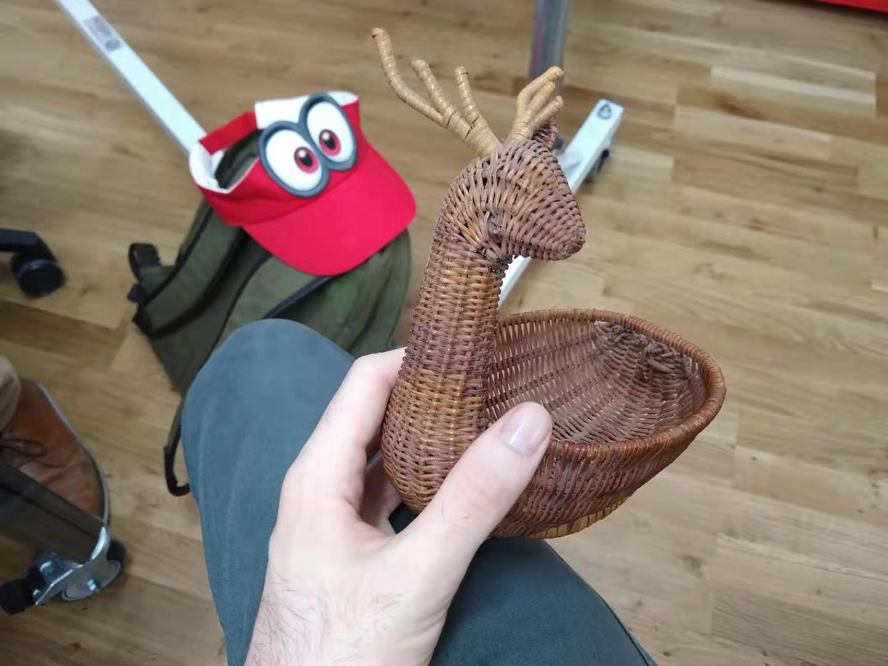
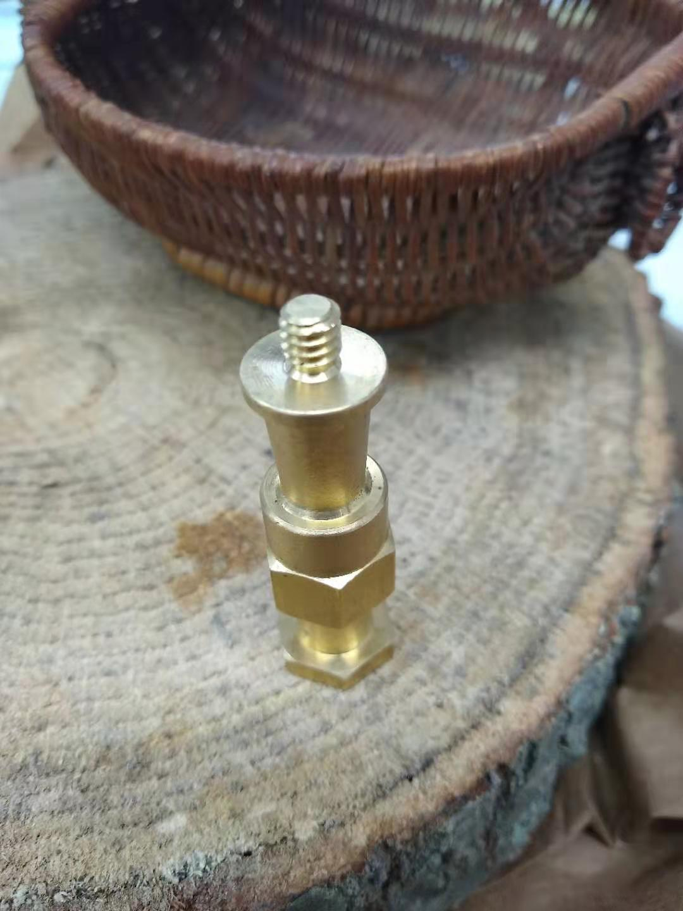

This class's assignment dealt with using different materials besides just plywood and acrylic, and fastening it all together. I started thinking about some crazy materials that I might never use otherwise, like sand or bone or such, which led me to the idea of visiting all the wholesalers I'd never gotten around to checking out. I live in Chelsea and the flower wholesale district is right around the corner, as well as the garment district. At the first wholesaler I went to, I found a wicker basket in the shape of a deer, with an eye and an ear missing. I won't lie: I fell in love with this deer and decided I wanted to use it for my project.
Another item that caught my eye was a cut from a log. The deer seemed to fit quite naturally upon it, so I came up with the idea for some kind of autumn scene with the deer as the centerpiece.
Originally, I was thinking of using leaves and flowers and other natural materials, but then my friend came up with the idea of using industrial materials. I really liked the idea of contrasting nature with industry and especially of making a nature scene with non-nature themed items, so I decided to visit some other wholesalers and see what I could pick up.
After going to Canal Rubbers, Canal Plastics, a few lighting shops, through the leather district, to Lowes and to a recycling center I thought I had enough odds and ends to do something with. I had: some drawer knobs, some rubber stoppers of some sort, steel wool, a sheet of (mostly) unused aluminum, some metal bars, a brass knob for something, and a circuit board I looted from a remote. The next part was to figure out how to put them together.
I decided to set the deer back at the rear of the log, and I gave him a tack and a small piece of aluminum to replce his ear and eye.
On the left side of the log I used the rubber plugs and drawer knobs to make a field of mushrooms. I used Titebond Quick&Thick to glue them to the wood, since the screws that came with them were not big enough to go all the way through the log.
On the right side, I nibbled out a square of aluminum and drilled through it, then screwed it into the wood. I I then glued three of the metal logs on top of it, thinking it looked a little like a campfire.
I put a tangle of wire on top of the brass knob so that it looked like a tree, then glued it above the aluminum. I took some tin foil and ran it through the center so that it looked like a river, then used some photoresistors that looked like cattails and buttons that looked like little crabs. Then I threw in a circuitboard and screwed some bolts in and the sculpture was done.
 Comments? Questions? Concerns? Email me
here!
Comments? Questions? Concerns? Email me
here!